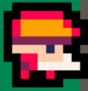
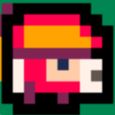
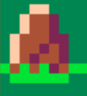
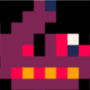
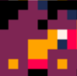

How To Play Picowars
What’s that!
Picowars is an 8bit homage to one of the greatest Nintendo games of all time. Advance Wars. That may just be my opinion, but it’s the right one.
Picowars is a turn-based strategy game where the objective is to build up an army from your bases in order to capture more properties on the map and eventually capture the opposing player’s headquarters.
New to the franchise?
Controls
Move your cursor with the arrow keys, select with Z and deselect with X
Enemy’s HQ
This is your target. You want to move your infantry and mechs onto this property and capture it. You do that, and you win.
Your HQ
And this is your HQ. Keep the opposing player away from it. If they capture it, it’s game over.
Bases
This is one of your bases. This is where you build your army, and it’s the first thing you want to select when the game begins. Move your cursor over it and click Z to open up the build menu. There you can build any unit that you can afford with your current gold.
Neutral properties
This is a neutral city. Right now it’s not doing anything for anyone, but if you move an infantry or mech onto this tile and capture it, it’ll change to your team’s colors and provide 1 gold for you per turn. Every property you own, including bases and your HQ generate 1 gold per turn, so the more you have the better.
A property has 20 capture points. Each turn you can capture once, and the amount of capture points that is deducted is equal to the amount of hp the capturing unit has. Each unit starts out with 10hp, so optimally it’ll take 2 turns to capture a property. If a unit has 1hp, it’ll take 20 turns. Yeesh.
Cities also heal any unit standing on them for 2hp per turn. In fact, all properties heal by 2hp, so keep that in mind when a unit is damaged and needs to retreat.
The Info Bar
This is where you can see information about the selected tile. Each tile has a defense rating that you can see by the number of stars next to the tile. This base has 3 stars next to it so it’s a pretty beefy defensive posture. If your unit is attacked from this tile, they’ll take less damage.
Infantry and Mechs
 
And these guys? These are the most basic units of your army. Infantry and Mechs. They don’t always do as much damage as the bigger boys, but they have the special ability of being the only units that can capture properties.
Terrain Mobility

Of note, only infantry and mechs can traverse rivers and mountains, and they’re slowed quite a bit from it! All terrain types affect units differently. It’s up to you to figure out which units are affected by terrain and by how much.
Ranged Units
 
These units are special. Rockets and Artillery. They can’t attack up close, as they’re ranged units. They attack from multiple tiles away from their target. They also cannot move and attack in the same turn, so place them strategically where you expect the enemy to walk into their range.
You can check their range by holding down X while your cursor is over them.
The APC Unit
APC stands for Armored Personnel Carrier. It cannot attack, however you can move a single infantry or mech unit onto it to load them up. The APC can move them much further than they’d otherwise be able to move on their feet.
The APC can be useful for moving infantrys and mechs long distances early in a match in order to capture more distant properties before the opponent captures them.